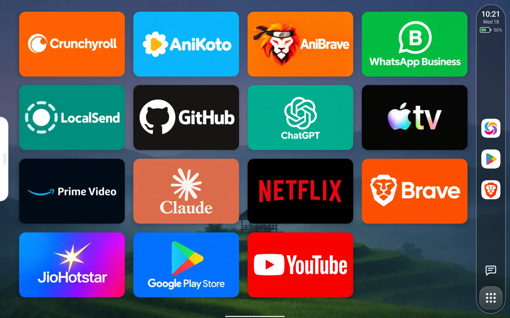

Android · Free and open source
Home,
in posters.
AniHome turns your Android tablet or phone into a wall of app banners. AniBrave is the browser that remembers which episode you were on.
- No accounts
- No ads
- No analytics
- Open source

CH 01 · Launcher
AniHome
Every app and website as a banner. A Control Center of round controls you arrange yourself, a dock with your own shortcuts, and gestures made for tablets.
- Banners matched automatically
- Control Center beside your notifications
- Optional notification history, on device

CH 02 · Browser
AniBrave
The Brave engine, with what watching needs: it remembers your episode, keeps your speed per site and puts tabs down the side.
- Continue on any site
- Playback speed per site
- Websites as fullscreen apps
CH 03 · Catalogue
Banner store
Hundreds of banners for apps and websites, built into AniHome and updated without an app update. Search it here, or add your own.
Browse the banner store


CH 04 · Extension
On your PC
AniBrave's speed, episode memory and site views as an extension for Brave on desktop. Three steps to install.
Install the extension
Downloads
Install the APK and allow installs when Android asks. Each release lists SHA-256 checksums.